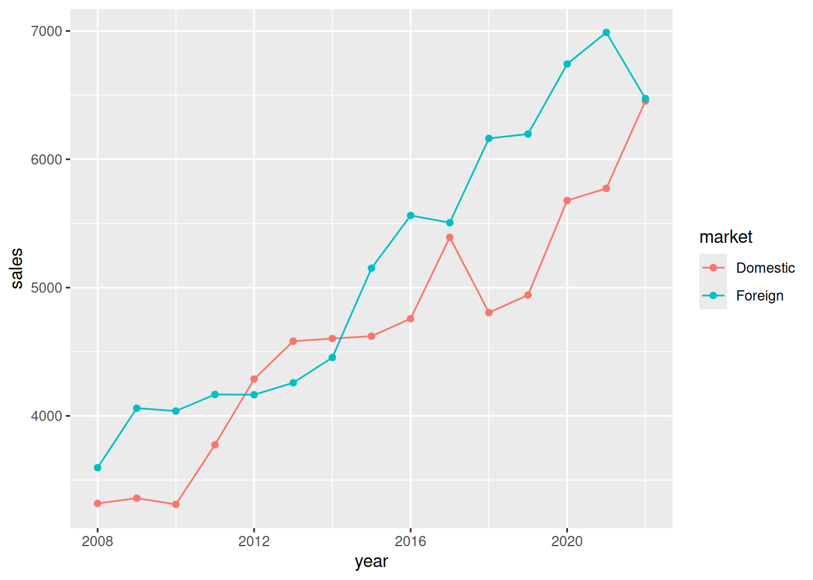

exp(log(5) + log(4)) / 2[1] 10Write an R command that calculates the following:
\frac{\exp(\log_e(5) + \log_e(4))}{2} Provide both the numerical answer and the R command.
Answer:
exp(log(5) + log(4)) / 2[1] 10Write an R command that calculates \log_3\left(81\right).
Answer:
log(81, base = 3)[1] 4Provide both the numerical answer and the R command.
If we create the following vector in R, what class will it be?
c(1, 1.5, 2, TRUE)Note: You do not need to supply your code for this question.
Answer:
Numeric.
Explanation: All elements of a vector in R must have the same class. Here all elements are coerced to be numeric. We can confirm this by checking the class of the vector:
class(c(1, 1.5, 2, TRUE))[1] "numeric"Write an R command that generates a numeric vector containing the following sequence:
(101, 99, 97, 95, ..., 5, 3, 1, 101, 99, 97, 95, ..., 5, 3, 1) The resulting vector should have 102 elements.
Answer:
rep(seq(from = 101, to = 1, by = -2), times = 2) [1] 101 99 97 95 93 91 89 87 85 83 81 79 77 75 73 71 69 67
[19] 65 63 61 59 57 55 53 51 49 47 45 43 41 39 37 35 33 31
[37] 29 27 25 23 21 19 17 15 13 11 9 7 5 3 1 101 99 97
[55] 95 93 91 89 87 85 83 81 79 77 75 73 71 69 67 65 63 61
[73] 59 57 55 53 51 49 47 45 43 41 39 37 35 33 31 29 27 25
[91] 23 21 19 17 15 13 11 9 7 5 3 1The logical vectors a and b have equal length. Which of the following options is always the same as !(a & b), regardless of the contents of a and b?
!a & !b!a | !ba | ba & bNote: You do not need to supply your code for this question.
Answer:
!a | !b
Explanation:
This is one of De Morgan’s Laws. To see that this is always true, we can make two vectors covering every possibility:
a <- c(TRUE, TRUE, FALSE, FALSE)
b <- c(TRUE, FALSE, TRUE, FALSE)The target output is:
!(a & b)[1] FALSE TRUE TRUE TRUEWe can then try the different options:
!a | !b[1] FALSE TRUE TRUE TRUE!a & !b[1] FALSE FALSE FALSE TRUEa | b[1] TRUE TRUE TRUE FALSEa & b[1] TRUE FALSE FALSE FALSEThe first one (!a | !b) matches; the rest don’t.
Download the dataset airbnb.csv. The dataset contains information on a random sample of Airbnb listings in Amsterdam. The variable descriptions are:
price: The average price per night of the listing.bedrooms: The number of bedrooms in the listing.city_center: Logical vector that is TRUE if the listing is in the city center and FALSE otherwise.minimum_nights: The minimum number of nights guests are required to book.entire_home: Logical vector that is TRUE if the listing is the entire home and is FALSE otherwise.When reading the dataset into R, assign it to df.
How many observations (rows) are in the dataset?
Provide both the numerical answer and the R command required to obtain the answer (if the dataframe is assigned to df).
Answer:
df <- read.csv("airbnb.csv")
nrow(df)[1] 1000What is the median of the variable price?
Provide both the numerical answer and the R command required to obtain the answer (if the dataframe is assigned to df).
Answer:
median(df$price)[1] 130What is the mean price of listings that are in the city center?
Provide both the numerical answer and the R command required to obtain the answer (if the dataframe is assigned to df).
Answer:
mean(df$price[df$city_center])[1] 164.7143What is the mean price of listings that require a booking of at least 6 nights?
Provide both the numerical answer and the R command required to obtain the answer (if the dataframe is assigned to df).
Answer:
mean(df$price[df$minimum_nights >= 6])[1] 141.6469What is the cheapest listing that is an entire home and has at least 3 bedrooms?
Provide both the numerical answer and the R command required to obtain the answer (if the dataframe is assigned to df).
Answer:
min(df$price[df$entire_home & df$bedrooms >= 3])[1] 77Download the dataset rates.csv. The dataset contains data on the average monthly mortgage interest rate in the Netherlands (variable Rate) and the European Central Bank (ECB) monetary policy rate (variable ECB).
Download the following template script and use it to clean the data and answer the questions that follow. At the end of this block of questions you will be required to upload your script.
When reading the dataset into R, assign it to df.
You should do the following cleaning tasks to your dataframe df in this order:
date variable to a date. Note: The date is currently in mm/dd/yyyy format.ecb to numeric. Tip: Use gsub("\\%", "", x) to remove a percentage symbol from x. Do this before converting to numeric.If you did all the steps correctly, you should have 116 observations. The average of the rate variable should be 2.632. The average of the ecb variable should be 0.2754.
Answer: Here are the data-cleaning steps:
# Read in the dataset:
df <- read.csv("rates.csv")
# Convert all variable names to lower case.
names(df) <- tolower(names(df))
# Format the date variable to a date.
df$date <- as.Date(df$date, format = "%m/%d/%Y")
# Drop all rows that contain any missing data.
df <- na.omit(df)
# Convert rate to numeric.
df$rate <- as.numeric(df$rate)
# Convert ecb to numeric
df$ecb <- as.numeric(gsub("\\%", "", df$ecb))
# Check mean of rate and ecb:
mean(df$rate)[1] 2.631983mean(df$ecb)[1] 0.275431Write an R command that computes the median of the rate variable.
Assign the output of this command to the variable a11 in your script and write its numerical value in the box below.
Answer:
a11 <- median(df$rate)
a11[1] 2.22Create a variable called spread which is the rate variable minus the ecb variable.
Write an R command that computes the mean of the spread variable.
Assign the output of this command to the variable a12 in your script and write its numerical value in the box below.
Answer:
df$spread <- df$rate - df$ecb
a12 <- mean(df$spread)
a12[1] 2.356552Write an R command that computes the average of the rate variable when the ecb variable is negative?
Assign the output of this command to the variable a13 in your script and write its numerical value in the box below.
Answer:
a13 <- mean(df$rate[df$ecb < 0])
a13[1] 2.15337Upload your script for the block “Data Cleaning” below.
The following 3 questions will work with the following scenario.
Your company sells shelves. You sell d=200 shelves per year with the sales equally spread out throughout the year. You buy the shelves from a manufacturer for p=50 per unit and every time you place an order you need to pay c=20. You also need to pay a holding cost of h=5 per shelf per year. Assume that you place an order for more shelves every time your inventory goes to zero, and that these are delivered immediately.
Your company’s total costs TC(q) as a function of the order quantity q are given by the formula below: TC(q)= \underbrace{\frac{cd}{q}}_{\substack{\text{Total} \\ \text{ordering} \\ \text{costs}}} + \underbrace{pd}_{\substack{\text{Total}\\\text{cost of}\\\text{shelves}}} + \underbrace{\frac{hq}{2}}_{\substack{\text{Total}\\\text{holding}\\\text{costs}}} where:
Write an R function that calculates the total cost TC(q) of the company given any input q, given the values d=200, p=50 c=20 and h=5.
Use this function to calculate the total cost of ordering 50 units per order (4 orders per year).
Write your numerical answer in the box below.
Answer:
d <- 200
p <- 50
c <- 20
h <- 5
tc <- function(q) {
return(c*d/q + p*d + h*q/2)
}
tc(50)[1] 10205Use this function to find the cost-minimizing order quantity.
Under the cost-minimizing order quantity, how many times per year will you place an order?
Write your numerical answer in the box below.
Answer:
fmin <- optimize(tc, c(0, 200))
d / fmin$minimum[1] 5If q^\star is the cost-minimizing order quantity, what are the total costs TC(q^\star) for the company if you order q^\star units per order?
Write your numerical answer in the box below.
Answer:
fmin$objective[1] 10200Download the two datasets:
year, market, and sales. The variable market is a character variable indicating if the sales data in that year were in the domestic market or foreign market. The variable sales is the number of units sold in that market in that year.year and fx. The variable fx is the average Euro-Dollar exchange rate in that year. For example, the 1.47 in 2008 means €1 was worth on average $1.47 in 2008.Assign the datasets sales.csv to df1 and fx-rate.csv to df2 in your script.
As in the template script, the sales.csv dataset should be assigned to df1 in R.
Write an R command that aggregates df1 to report the total number of units sold each year.
The output of this command should look like:
year sales
1 2008 6913
2 2009 7419
3 2010 7348
4 2011 7942
5 2012 8452
6 2013 8840
7 2014 9058
8 2015 9772
9 2016 10320
10 2017 10898
11 2018 10968
12 2019 11139
13 2020 12422
14 2021 12762
15 2022 12928Write the R command that generates this in the box below.
Answer:
df1 <- read.csv("sales.csv")
aggregate(sales ~ year, data = df1, FUN = sum) year sales
1 2008 6913
2 2009 7419
3 2010 7348
4 2011 7942
5 2012 8452
6 2013 8840
7 2014 9058
8 2015 9772
9 2016 10320
10 2017 10898
11 2018 10968
12 2019 11139
13 2020 12422
14 2021 12762
15 2022 12928Plot the sales data over time with separate lines for domestic and foreign markets.
Choose the answer which best describes what you see in the plot:
You do not need to provide R code with your answer.
Answer:
Domestic sales exceeded foreign sales only in 2012-2014.
Explanation:
The dataset is already in long format and does not need to be reshaped before plotting. We can plot the two time series using the following commands:
library(ggplot2)
ggplot(df1, aes(year, sales, color = market)) + geom_line() + geom_point()
Merge the datasets sales.csv and fx-rate.csv together by year. Use the merged dataset to find the average sales in Foreign markets during years where the Euro-Dollar exchange rate is less than 1.12 (variable fx is less than 1.12).
Write your numerical answer in the box below. You do not need to provide R code with your answer.
Answer:
df2 <- read.csv("fx-rate.csv")
df <- merge(df1, df2, by = "year")
mean(df[df$market == "Foreign" & df$fx < 1.12, ]$sales)[1] 5728.667